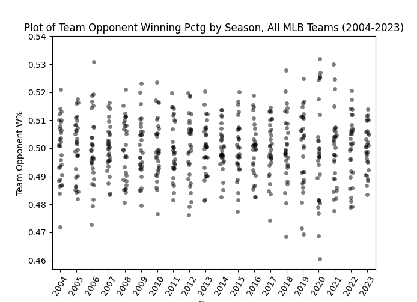
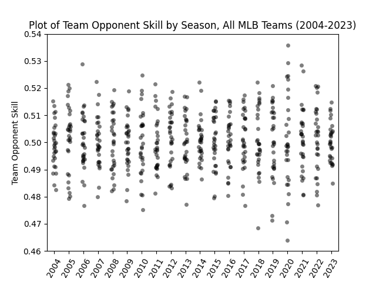
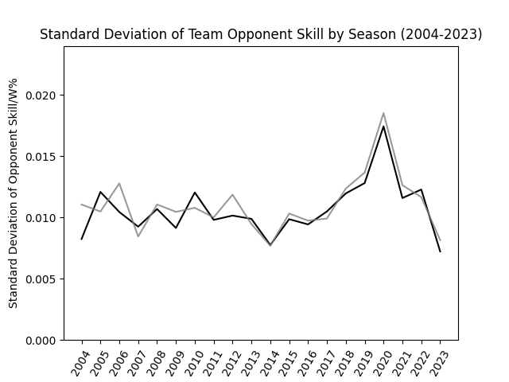
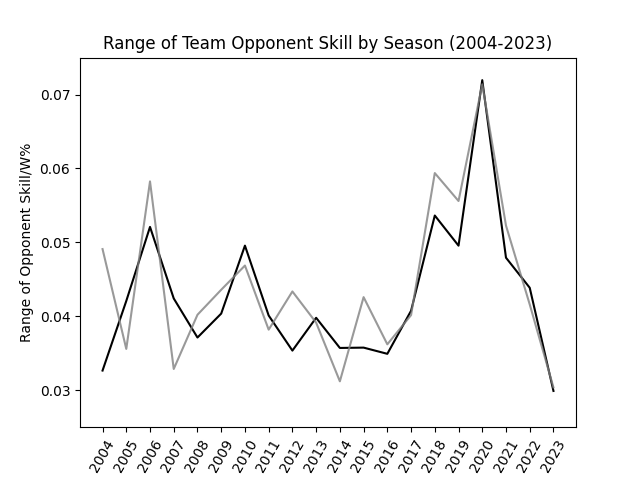
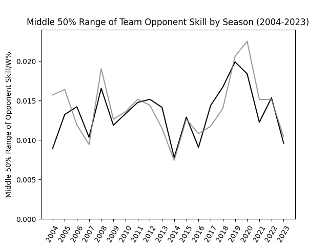

Was the 2023 MLB Schedule Actually Fairer?
by A. Kline
Posted on 10/27/2023
In late August of 2022, Major League Baseball announced that starting in the 2023 season, every team would play against every other team at least once. This was a first for modern MLB history–even though interleague play during the regular season has been a thing since 1997, the American and National Leagues have remained largely confined to themselves, with each team playing only 20 interleague games per season in 2022.
In 2023, however, the number of interleague games each team played more than doubled to 46. To accommodate this change, the composition of the league’s schedule was altered in other ways as well. The number of games each team plays against division opponents decreased from 72 to 52, and the number of “same league, different division” opponents went from 66 to 64. This new schedule, heralded by MLB as “more balanced,” was generally well-received by a fanbase who thought this greater schedule overlap would bring more parity to the league. The five strong teams in the AL East, for instance, would no longer need to play as many games against each other, meaning they would in theory be able to rack up more wins against easier opponents and their win-loss records would better reflect their true talents. At the same time, beneficiaries of weaker divisions (say, the Guardians or Dodgers) would be forced to play a larger number of strong opponents, meaning their regular-season record would likely regress to a truer reflection of their actual skill level. That was the hope among fans, myself included. But did it actually work out that way? In other words, was the 2023 MLB schedule actually fairer?
Before I attempt to answer that question, we have to address a couple others. First and foremost, what do we mean by “fairer?” When I use that word in this post, I am referring not to how balanced the teams themselves were (e.g. by winning percentage), but rather how balanced the schedules of teams were. Condensing a 162-game schedule into something easily quantifiable is difficult–let alone condensing it into a single number–but there are a number of possible ways to quantitatively measure and rank team schedules. One is Baseball Reference’s strength of schedule–a metric I’ve referred to on this site before–which essentially measures the number of runs a team’s opponents are better (or worse) than average. A simpler approach would be to look at the average winning percentage of each team’s opponents. In a similar manner, the average Pythagorean winning percentage of each team’s opponents can be measured, which provides a slightly more robust picture than winning percentage alone (this is the schedule strength metric that Baseball Analytica uses in its leaderboards). There are also formulas that account for the strength of opponents’ opponents–though the degree to which this is necessary is a discussion for another time. For my analysis, I decided to focus on average opponent winning percentage and average opponent Pythagorean winning percentage (referred to as team opponent skill for simplicity).
With these stats in mind, how do we measure “fairness,” exactly? The answer is actually rather simple: how much do these metrics vary from team to team? Are there a lot of teams with very easy schedules and a lot of teams with very difficult schedules, or do all team schedules fall much closer to the middle in terms of difficulty? Put succinctly, we want to measure the variability of these stats, which can be done by looking at metrics like standard deviation, range, middle 50%, and more than I can realistically name here.
I decided to focus my analysis on the span from 2004 to 2023, since the former marks the date which the modern pre-2023 schedule came into place (the system of the 3-year rotation between interleague divisions was introduced in 2004). The first thing I did was look at how average opponent winning percentage varied over the years. If the 2023 schedule was indeed fairer, then we should expect a much narrower distribution in 2023 than in the years prior. Is this what we get?
Since 2004, the distribution of schedule difficulty has varied, but the 2023 season stands out as being more equal. Notice also the extreme variation in the 60-game 2020 season. (Data: Fangraphs, Baseball Reference)
Like we expected, the distribution of schedule difficulty in 2023, as measured by average opponent winning percentage, seems noticeably less extreme than in years prior. Now let’s look at average opponent Pythagorean winning percentage (a.k.a. opponent skill):
The graph of opponent skill tells a very similar story to that of opponent winning percentage, though note the much more apparent variation in 2020. (Data: Fangraphs and Baseball Reference)
These graphs give us a rough idea of how the variance of schedule strength has changed over time, but they alone do not give us the information we are looking for. As stated before, specific metrics we can look at are the standard deviation, range, and middle 50% range for the two measures of schedule strength. Below is the graph for the standard deviation of both opponent winning percentage and opponent skill for every season since 2004.
In 2023, the standard deviation in opponent skill (black) and opponent winning percentage (gray) by team decreased significantly. Note also the spike in 2020. (Data: Fangraphs and Baseball Reference)
As measured by standard deviation, the variability in schedule strength among teams decreased significantly from 2022 to 2023. That being said, the present value does not seem that much lower than the 2004-2016 baseline. Interestingly, between 2017 and 2022, the standard deviation seems to be consistently higher on average than in the seasons prior, even when excluding the outlier that was 2020. Of course, standard deviation is not the only way to measure variability, so now let’s look at the range (maximum - minimum).
While the range of opponent skill (black) and opponent winning percentage (gray) did reach their lowest in 20 seasons with 2023, a more surprising trend becomes apparent here as well. (Data: Fangraphs and Baseball Reference)
Though range is clearly a more volatile metric year-to-year than standard deviation, the effect of the 2023 schedule changes are still visible here. That being said, the period from 2017 through 2022 maintains a consistently high range of schedule strength among teams, especially when compared to 2011 through 2016. Of course, range is not the most robust stat in the world when it comes to measuring variability–the maximum and minimum values, after all, may be outliers, and themselves can be quite volatile. For our final measure of variability, let’s look at the range of the middle 50%--defined as the 75th percentile value minus the 25th percentile value.
The middle 50% range of opponent skill (black) and opponent winning percentage (gray) seems to be more volatile in the short term but more consistent in the long term. (Data: Fangraphs and Baseball Reference)
The graph of the middle 50% range of schedule strength seems to flatten all trends to the point where the 2023 schedule is no longer uniquely fair. That being said, the trend of higher variability between 2017 and 2022 remains–though to less of an extent. I keep bringing this period up because at least on the surface level, it doesn’t make any sense. The schedule in 2019 was structured identically to that of, say, 2013, but you wouldn’t think that based on these graphs alone. I have some ideas for why this period of greater variability may have existed, but alas, those will have to wait for another time.
Looking at the data above, we can conclude that the 2023 Major League Baseball schedule was more balanced to some extent, in the sense that the level of variability in schedule strength was somewhat lower than in years past. That being said, it’s important to remember that the distribution of schedule strength across the league is surprisingly variable from year to year, and that it’ll be years before we have a sufficient enough sample size of seasons under the new scheduling scheme to draw a strong conclusion. It also remains to be seen what kind of long-term effect these schedule changes will have on team performance as a whole, as well as things like the postseason.
The reality is that these schedule changes, though far from nothing, were not necessarily as earth-shattering as some may make them out to be. Teams still play no shortage of games against divisional opponents, and basically the same number of games against non-divisional league opponents. If Major League Baseball wanted to give schedules even more parity then they easily could have, and such would have likely made schedule strengths even more fairly distributed. But too drastic a change would have likely been met with fan resistance–for better or for worse, drastic variation in schedules has been a part of organized baseball for generations. A change such as this one, at its core, is more about adding new excitement and intrigue to the regular season for fans than it is about actually making the league a fairer place for teams.